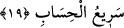

buyurdu ki:
“Allah, melekler ve ilim sahipleri adâleti ayakta tutarak şehâdet ettiler ki
Allah’dan başka tanrı yoktur.”
Burada Allah’ın şehâdeti hakiki, meleklerin şehâdetleri mecâzî olup umûmen ikrâr ve
îmana şâmil şehâdettir. Yani, “melekler Allah’ın kudretinin büyüklüğünü görünce
şehâdet ettiler” demektir. “İlim sahiplerinin şehâdeti îman etmeleridir. Onlar îmanlarına
tekvînî ve teşrîî delilleri huccet göstermişlerdir. Bunlar, peygamberler ve mü’minlerdir
ki, tevhîdi bilip sahih bir îtikadla ikrâr etmişlerdir. Buna göre, Allah’ın kendinden
başkasının güç yetiremeyeceği kendine has fiilleri ile birliğine delâlet ettiği
anlaşılmaktadır. Meleklerin ve ilim sahiplerinin de bunu ikrârı; buna şehâdet
hükmündedir.
“Kıst”, yani adâlet, Allah’a mahsûs sıfatlardan biridir. Allah rızıkların ve ecellerin
taksiminde, sevapların ve cezâların verilişinde, kullarına emrettiklerinde ve
yasakladıklarında “kıst” yani “adl” ile muamele etmektedir. Bu ise, Allah’ın kulları
birbirleriyle müsâvî tutup zulmü onlardan uzaklaştırmasıdır.
“O, her şeye mutlak gâlip, hüküm ve hikmet sahibinden başka tanrı yoktur.”
Şehâdetin mazmûnu (ince mânası), tevhîdin te’kîdi için tekrar edilmiştir ki kullar, O’nu
bir tanısınlar ve hiçbir şeyi O’na ortak koşmasınlar. Çünkü O, kendini bir tanımayandan,
hiç kimsenin güç yetiremeyeceği şekilde intikam alır ve dilediğini yapar; bütün
mahlûkatı üzerinde istediği şekilde hükmeder. Kimse de O’nun hükmünü durduramaz ve
geri çeviremez. Çünkü O, bütün mahlûkata mutlak gâliptir.
19. Allah nezdinde hak din İslâm’dır. Kitap verilenler, kendilerine ilim geldikten
sonradır ki, aralarındaki kıskançlık yüzünden ayrılığa düştüler. Allah’ın âyetlerini
inkâr edenler bilmelidirler ki Allah’ın hesabı çok çabuktur.
“Allah katında hak din İslâm’dır.” Âyetin bu kısmı, yeni bir cümle olup bundan
önceki âyeti te’kîd etmektedir. Yani İslâm’dan başka Allah’ın hoşnud olduğu, makbûl
tuttuğu hiçbir din yoktur. Bu din, tevhîdi kabul edip kanunları şerefli şerîata göre
koymaktır. Bu da Allah’ın Adem (a.s.)’ı gönderdiğinden itibaren kulları için seçtiği hak
dindir. Bunun dışında kalan bütün dinler bâtıldır.
Şeyhimiz Atpazârî Osman Fazlı şöyle demektedir: “Kelâm’ın, indirilmesinden
maksat, hak dine mutlak dâvettir. Hak din de, Adem (a.s.)’dan Peygamberimiz (s.a.)’e
kadar yalnızca İslâm’dır. Nitekim Cenâb-ı Hak bu âyet-i celîlede, “Allah katında hak